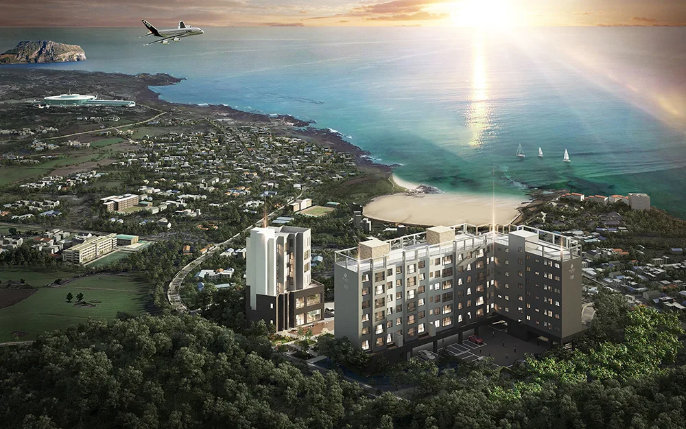
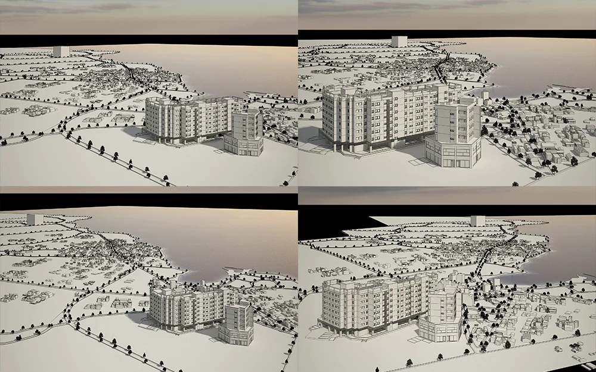
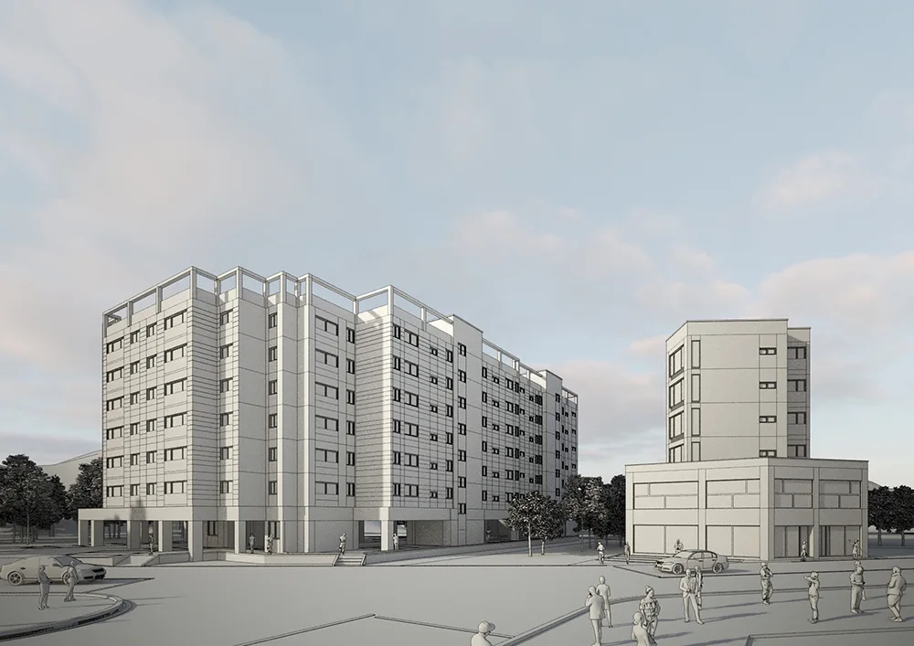
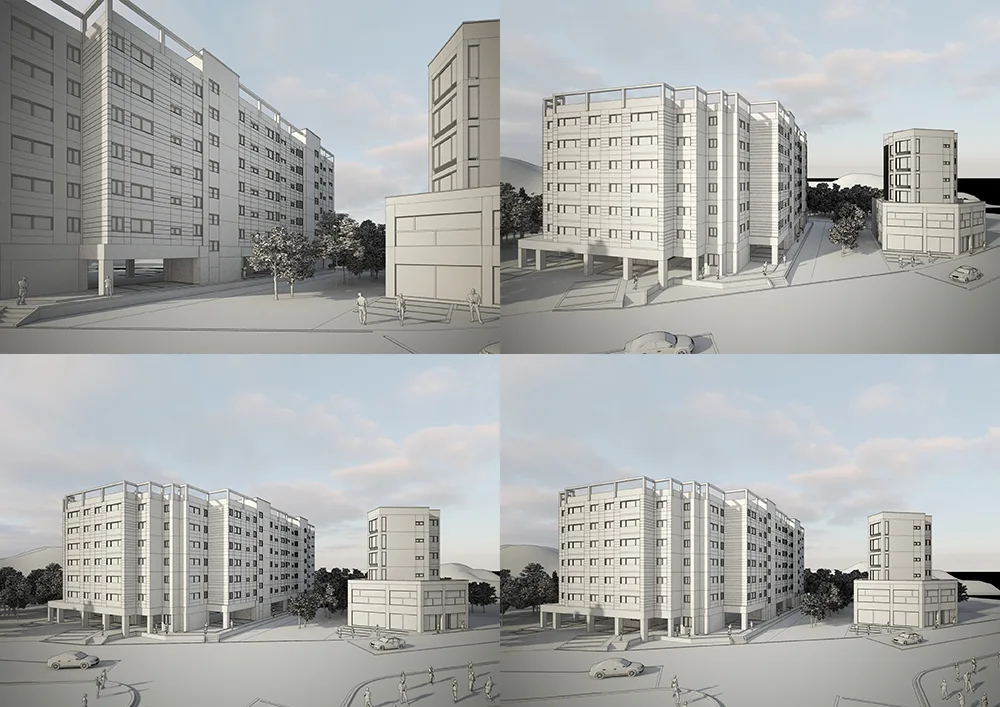
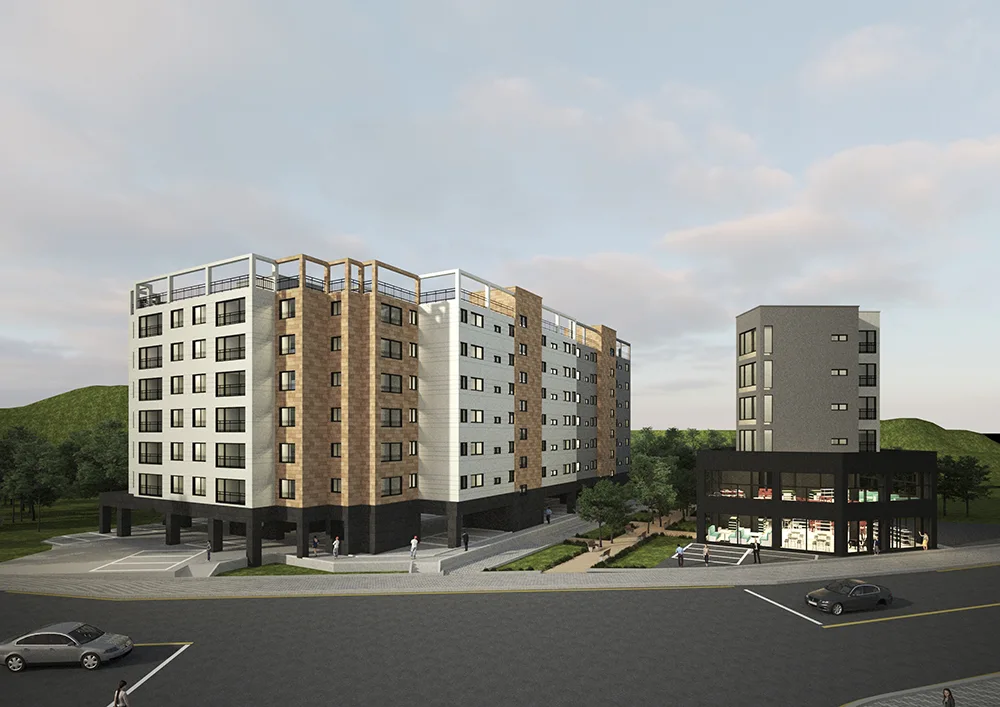
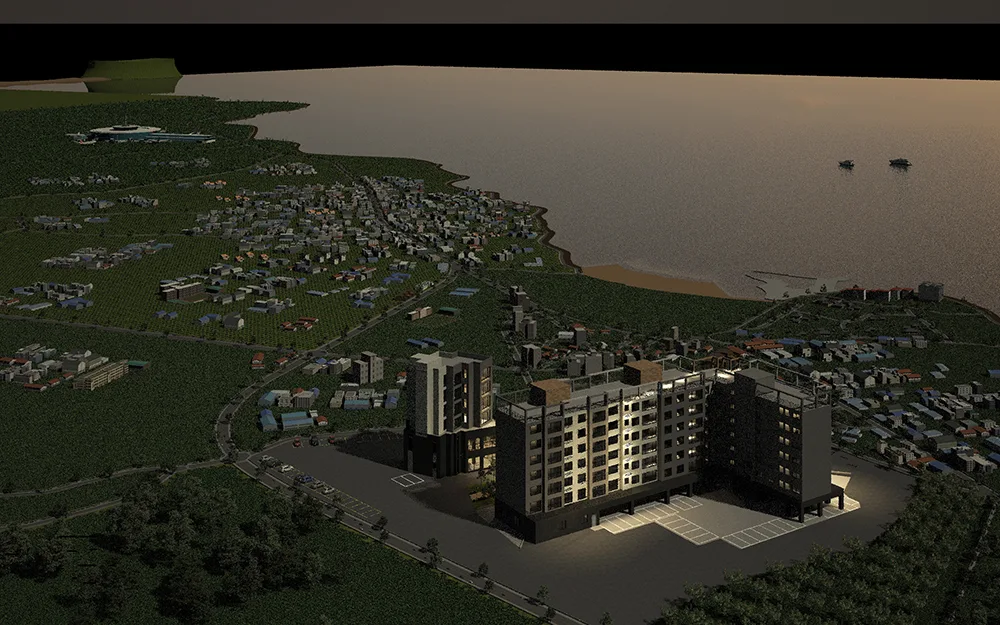
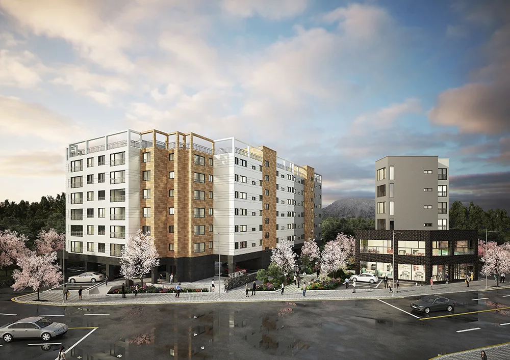
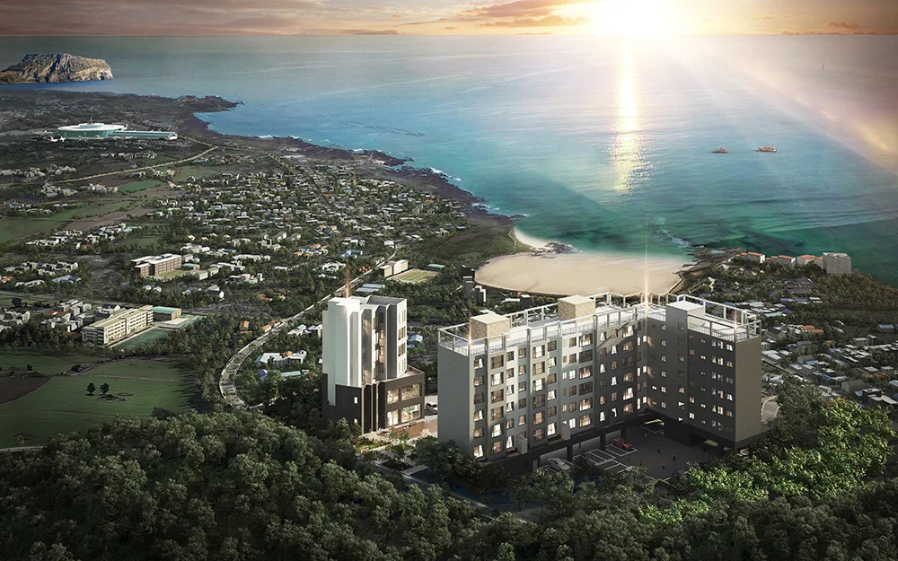
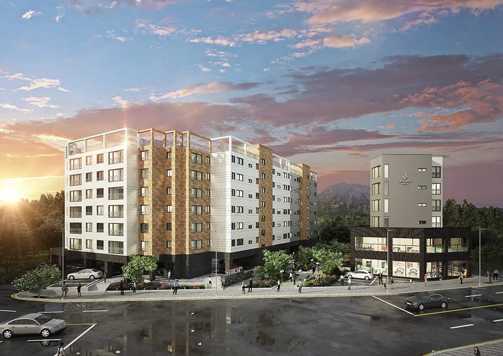

프로젝트 소개
2018년 11월 8일에 문의 주셨던 제주도 표선면 표선리 1591-5 일대 세베스트 건축 및 분양광고에 쓰일 광역도와 조감도 및 투시도에 대한 소개와 작업 중간 과정 및 결과물들 입니다.

완성된 세베세트 투시도 입니다. 제작하실 때 보통 광역 조감도도 같이 제작해달라고 의뢰해 주셨습니다.

상기 프로젝트의 경우 총 제작일 수는 11월 8일 착수하여, 최종 결과물까지 10일 소요된 11월 17일날 완료되었습니다.
초기 다른 디자인 업체에 맞기셨다가 결과물이 만족스럽지 못하여 저희 메이크 그룹에 재문의를 해주신 상황이였고 그런 과정에서 마감기한이 많이 남지 않은 상황이였습니다.
그래서 작업도 급히 하여야했고 작업 중간 피드백 과정이 신속하게 이루어져야 하는 프로젝트였습니다.
이후 내용들에는 작업 과정들에 대한 이해를 돕고자 실제로 진행되었던 프로젝트의 세부 내용들을 공개하도록 하겠습니다.
작업과정
뷰선정단계

착수 후 3일 이후인 12일날 굉장히 빠르게 광역도에 대한 뷰선정이 진행되었습니다. 그와 동시에 투시도에 대한 뷰 선정도 진행되었습니다.

역시 작업과정 피드백 중간에 의사 전달이 난해한 경우가 있습니다. 저희쪽에 뷰를 설명해주시는 것이 어려워서 투시도에 대한 뷰의 디테일한 조정이 있었습니다.

상기 이미지를 통해 구체적으로 고객님의 의도를 정확하게 파악할 수 있었고 컬러링까지 진행하여 뷰를 확정할 수 있었습니다.

퀄리티업 단계
뷰 앵글 선정 이후 광역 조감도와 투시도 퀄리티 업 작업과 톤 앤 매너 작업이 진행되었습니다. 이하 이미지들은 조감도와 투시도 퀄리티 업 및 완성작업이 진행된 과정입니다.

광역도의 경우 제작 난이도가 높고 반 야경의 톤 앤 매너로 제작을 요청하셨기 때문에 중간과정이 어두워 걱정을 하는 고객분들이 많으십니다. 저희도 중간 과정을 예쁘게 해서 보내면 고객분들이 좋아하시는 것을 알지만 이미지 제작 난이도에 따라 중간과정이 어색하고 이해하기 어려운 경우가 많습니다.

투시도의 경우 제작 난이도가 광역 조감도에 비해 상대적으로 쉽고 구현해야 할 사물들이 적어 톤 앤 매너라던지 중간 과정이 예뻐보이기 쉽습니다. 그만큼 완성되었을 때 퀄리티가 높은 경우가 많습니다.
이 중간과정을 보냈을 때가 11월 14일이였습니다.
고객분께서 날씨나 시간대 및 반드시 구현되어야 할 이미지 모델링 등에 대해서 다시한번 언급해주셨습니다.(좀 더 다이나믹한 석경을 원하셨고, 건물 사이, 광역도에서는 건물 우측에 제주도를 나타내는 귤 나무 표현 등을 요청하셨습니다.)
이 과정이 없이 최종 완성단계에 들어가게 되면 고객과 제작사간의 이해 상충이 있을 수 밖에 없기 때문에 구체적으로 의견을 정리해서 이미지화 시켜서 보내주시는 것이 이미지의 완성도를 높이는데 매우 중요합니다.
최종 완성 단계
초기에 요청하신 완성일이 17일이였습니다. 저희는 최종 완성일 전에 반드시 완성에 대한 검토를 받고 납품일에 문제가 없도록 확인하고 있습니다.
16일날 최종적으로 제작한 이미지를 보내드렸고 역시나 수정사항이 생겨 17일까지 수정하여 완성하였습니다.
준 완성단계의 이미지입니다.


거의 완성단계 까지 진행되었고 광역도에서 이정표를 추가한다던지, 로고 색상의 변경, 비행기 같은 이미지를 넣어주기를 원하셔서 수정하여 최종완성까지 진행하였습니다,
상기 프로젝트 과정을 통해 일반적인 작업 진행 과정에 대한 이해에 도움이 되셨으면 좋겠습니다.
앞으로 이외 저희와 함께 작업한 수많은 프로젝트들을 순차적으로 업로드 및 블로그 하여 고객에게 좀 더 다가가고 이해를 도울 수 있도록 하는 회사가 되도록 노력하겠습니다.
#조감도 #투시도 #아이소메트릭 #아이소매트릭 #제작 #과정 #비용 #소개